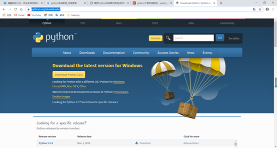
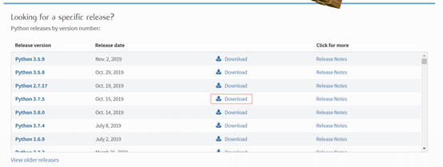
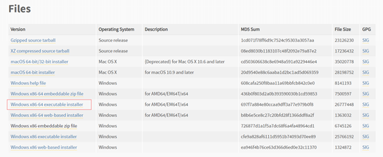
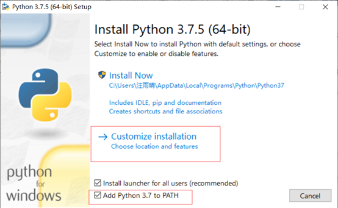
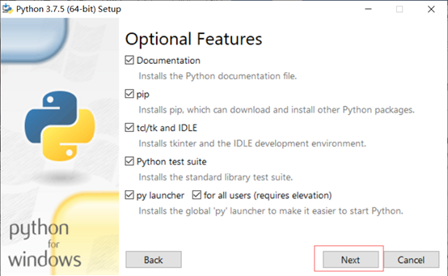
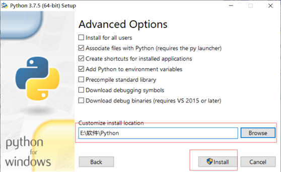
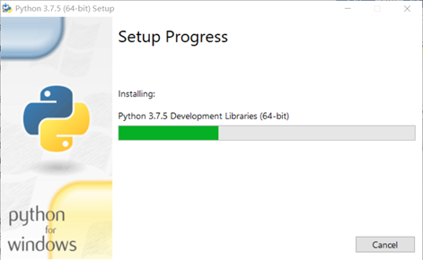
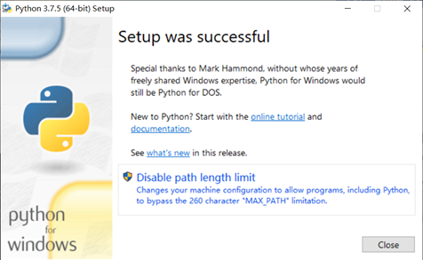
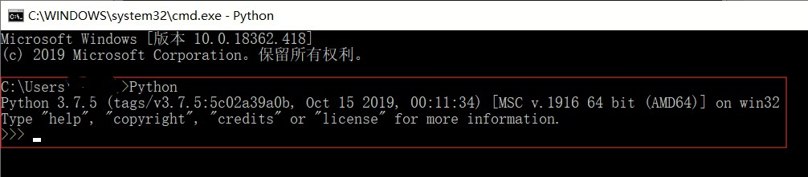

安装python分三个步骤：
*下载python
*安装python
*检查是否安装成功
1、下载Python
（1）python下载地址https://www.python.org/downloads/

（2）选择下载的版本

（3）点开Download后，找到下载文件

Gzipped source tarball 是Linux系统下载的版本
XZ compressed source tarball 是CentOS系统下载的版本
注意Linux和CentOS自带python，一般不用再下载python。
macOS 64-bit/32-bit installer：Mac电脑32位系统版本。
macOS 64-bit installer：Mac电脑64位系统
Windows x86-64：windows 64位操作系统版本。
Windows x86：windows 32操作系统版本。
embeddable zip file：解压安装。下载的是一个压缩文件，解压后即表示安装完成。
executable installer：程序安装。下载的是一个exe可执行程序，双击进行安装。
web-based installer：在线安装。下载的是一个exe可执行程序，双击后，该程序自动下载安装文件(所以需要有网络)进行安装
2、安装Python
（1）双击python-3.7.5-amd64.exe
（2）勾选 Add Python 3.7 to PATH，再点击Customize installation

Install now 默认安装且默认安装路径（一般默认安装在C盘）
Customize installation 自定义安装
Add Python 3.7 to PATH 自动加到环境变量中
（3）不知道的默认就可以了，点击next。

（4）更改安装地址（建议不安装C盘，如果C盘内存小安装的东西多了会很卡，当然内存大就无所谓了）

（5）安装过程

（6）安装成功

3、检查是否安装成功Python
出现这样内容，安装成功。

4、下载集成开发环境（IDE）：PyCharm
PyCharm可以方便的编写python代码，拥有一般IDE具备的功能，比如， 调试、语法高亮、Project管理、代码跳转、智能提示、自动完成、单元测试、版本控制等。